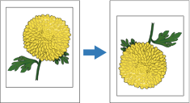

イメージを180°回転
[イメージを180°回転]を有効にすると、ページ上のイメージの上端が下端にくるように回転できます。 向きは縦と横にできます。

イメージを180°回転するオプションを選択するには:
[詳細]ウィンドウの[イメージを 180° 回転する]の隣にある矢印をクリックし、次のいずれかのオプションを選択します。
- プリンターの設定に従う: 現在のプリンター設定が使用されます。
- [オン]または[有効]: プリンタで自動的にイメージを180°回転できます。 プリンタが用紙サイズ、ページの向き、給紙方向、および選択された仕上げオプションを考慮しながら、イメージを回転します。
- [オフ]または[無効]: 機能がオフになります。